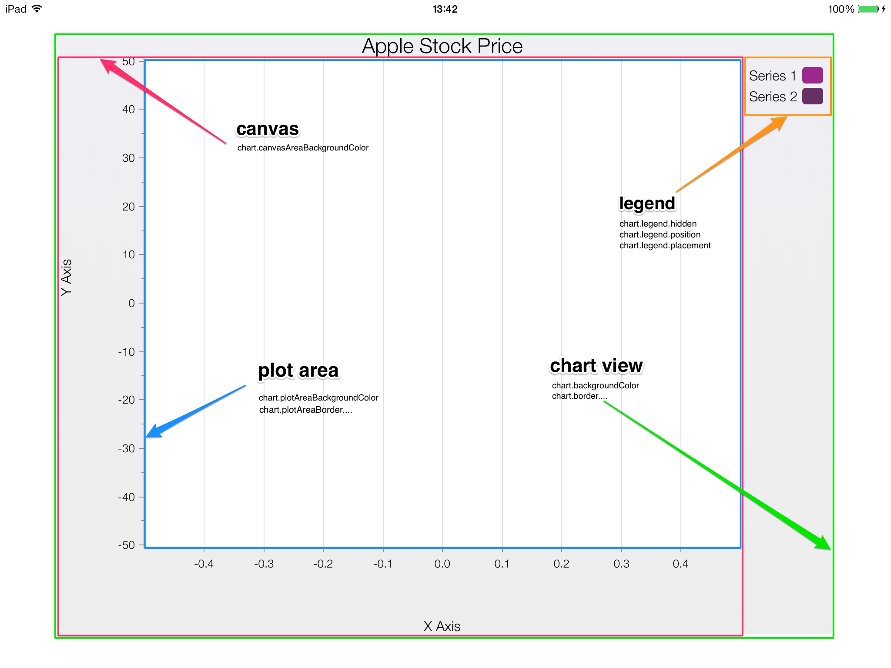

shinobi-userguide Document
shinobicharts userguide
overview
This document provides an overview of the ShinobiCharts control. It describes the features of the control and its associated concepts.
ShinobiCharts provides a quick and effective way to visually represent data in an iOS application. The chart contains a plot area, upon which a set of chart series (such as line, bar, OHLC, etc.) are displayed. Each series contains a set of data points. A chart can display a number of different types of chart series simultaneously.
The plot area is surrounded by axes which define the dimensions of the data specified. Each axis has a range describing the data being displayed. Furthermore, ShinobiCharts allows the modification of the axis display by providing zoom and pan interaction out of the box.
If you simply want to get up and running, follow the quickstart-Objective-C, or the quickstart-Swift. Alternatively, for a more detailed description of how the chart works and the features it presents, head over to the ShinobiCharts Control Overview. Finally, for guides that tackle specific usage scenarios, head on over to the ShinobiCharts How-to Guides.
The chart has a complete set of Xamarin.iOS bindings, allowing you to make use of all of its features from within applications written in C#. In order to get up and running, follow the quickstart-Xamarin.iOS.
shinobicharts control overview
The ShinobiChart provides a powerful and flexible way to represent data visually. The chart comes with a number of interactions such as pan and zoom that are optimised for touch interfaces. The highly performant nature of the chart lends itself to the mobile environment and provides a super smooth user experience.
This section describes the features and concepts which constitute a chart.
In order to use the chart you will typically perform the following tasks:
- Create the ShinobiChart view and add it to your view hierarchy.
- Set the chart
datasourceproperty - this is used to provide data to the chart and construct appropriate chart series to display that data. - Set the axes on the chart. Cartesian charts must have one or more X and Y axes and radial charts must have exactly one x-axis and one y-axis.
- (Optionally) Set the chart
delegateproperty - this is used to respond to a user’s interactions with the chart.
The following sections describe this process in more detail.
Anatomy of the chart
There are a number of core components which make up a chart. Here is a typical chart displaying commonly used features. Under the label of each element, is an example of a property or method that may be used to configure it. You’ll find this type of image throughout the documentation.
The chart object is a UIView with a number of subviews to contain the visual elements. The datasource is attached to the chart and is responsible for supplying the raw data to the chart. The delegate is an optional protocol that can be adopted and attached to the chart to be notified of key events taking place. These are covered later in this document.
View Structure
The main chart view contains a number of subviews that each vary in size in order to accommodate the configured elements on the chart. Below is a diagram showing the subviews and what each can contain:

The main chart view object is marked in green and contains all elements of the chart. This is the view that you will add to your view hierarchy when displaying a chart. The legend (also a UIView) is a part of this view, as is the title label. All other elements of the chart are contained within the canvas, marked in red. When the chart title and legend are present, the canvas must reduce in size to accommodate their placement.
The canvas view (chart.canvas) will consume as much space within the chart view as possible, whilst still allowing space for the title and legend. The canvas contains the axes and the plot area. It first places all of the axes, before working out the maximum plot area size possible.
The plot area is responsible for rendering all of the chart series, annotations and crosshair. It is made up of several layers including: an underlay, an openGL view, an overlay. The series are rendered on the openGL view, while the underlay and overlay are used to display annotations and grid-stripes/lines either above or below the series data.
Main Visual Components
Listed below are a number of the main elements making up the chart:
Chart Title: Each chart can have a single title that may be displayed at the top of the chart. See Setting the Title on the ShinobiChart class
Chart Series: The chart renders the data provided to it via one or more chart series. These are components which determine the visual representation of the data. For example, a line series will render the data as a line chart, a column series will render it as vertical bars, and so on. Multiple different chart series may be added to the same chart simultaneously. These are rendered in the plot area - the above image shows several line series. See The Series
Axes: Many of the series types require axes (line, column, bar, etc) and some do not (pie, donut, etc). Those that require axes must have at least one X and one Y axis, but may have an arbitrary number of either, on either side of the chart. See The Axes
Legend: A chart may optionally display a legend associating a series with a title for additional information. There are several options for position and layout. See Legend
Annotations: ShinobiCharts supports additional visual cues being overlaid on the chart through the use of annotations. These could take the form of shapes, markers, text or other visual display. These are only supported in the premium version of ShinobiCharts and display in the plot area - either above or below the data.
Crosshair: A tooltip that tracks series values can be enabled and will display on the plot area after a long press action. See Crosshair
Datasource
In order to render data within the chart you need to supply that data to the chart. The datasource is responsible for taking data from your data provider (simply an array or a complex web service, etc) and matching this data with the series objects that will display it on the chart.
You supply the object which acts as the datasource to the chart by setting the datasource property. This object must adopt the SChartDatasource protocol and respond to the minimum set of required methods.
Note: The chart only holds a weak reference to the
datasourceobject. You must manage this object yourself.
The required methods that must be implemented are as follows (note that each series and datapoint is referenced by an index just like UITableView):
- numberOfSeriesInSChart This informs the chart of how many series it will be displaying.
- sChart:seriesAtIndex: The datasource links the data you provide to a series type. Return the series type here.
- sChart:numberOfDataPointsForSeriesAtIndex: The different series in a chart can each contain a different number of data points. This returns the number of data points in the series at the specified index in the chart.
- sChart:dataPointAtIndex:forSeriesAtIndex: This returns the data point at the specified index from the specified series in the chart.
The SChartDatasource protocol also has optional methods to allow you to specify custom behavior for series in the chart, determine which series are rendered against which axes and optionally provide all the data for a series in a single array rather than point by point. See the SChartDatasource class
We have already implemented a simple datasource you can use called SChartSimpleDatasource. If you choose to use this, it must be assigned to your chart’s datasource property to take effect. You can add a series to your chart by simply creating an array of either SChartDataPoints or NSNumber objects that contain your data values along with a series object that must be a subclass of SChartSeries (e.g. SChartLineSeries). Use the addSeries:dataArray: to accomplish this.
If you pass in an array of NSNumber objects they will be automatically translated into an array of SChartDataPoint objects using the NSNumber value & its corresponding index as the X & Y values depending on the series orientation.
Data Points
The datasource for the chart requires you to pass in data points that contain appropriate data for each series. ShinobiCharts comes with several types of datapoint:
- SChartDataPoint for simple, single value x and y values (eg: line, bar)
- SChartRadialDataPoint to be used with pie/donut series. Note: In future releases, this class will be renamed, as these types of data points should only be used with pie/donut series, not radial ones like radar or polar series. The name of this class has been kept constant for now in order to not break the framework API.
- SChartMultiXDataPoint for series with multiple x values for a single y value (vertical band)
- SChartMultiYDataPoint for series with multiple y values for a single x value (eg: OHLC, candlestick)
- SChartBubbleDataPoint to be used with SChartBubbleSeries
Using SChartDataPoint is as simple as creating an instance and assigning the xValue and yValue properties. For series that are expecting multiple x or y values, you should use SChartMultiXDataPoint or SChartMultiYDataPoint and add data to xValues or yValues (respectively) for each key the series is expecting. A list of the expected keys is available through the xValueKeys and yValueKeys methods on SChartSeries.
SChartBubbleDataPoint is a special datapoint that also contains an area property in addition to xValue and yValue.
It is also possible to use your own objects as data points by conforming to the SChartData protocol . This is useful as existing model objects can be made to conform to the protocol and then given directly to the chart to avoid duplication of memory. The protocol ensures that you return a default x and y value. The protocol also provides the option of returning additional x and y values based on a given key - useful for series types which require multiple data values, such as OHLC, candlestick and bubble charts.
Labels
Cartesian Series
SChartDataPointLabel labels can be added to your data points by setting the showLabels value of the SChartDataPointLabelStyle on a series. The label can then be styled and positioned using other properties on the style.
Pie and Donut Series
Spokes offer an alternative way of displaying labels on a pie or donut chart.

Turning spoke labels on is as simple as enabling them in the pie or donut series' style object (a good place to do this is in the sChart:seriesAtIndex: chart datasource method):
series.style.spokeStyle.showSpokes = YES;
series.selectedStyle.spokeStyle.showSpokes = YES;
To override the default styles as defined by the chart’s theme, you can use properties contained within SChartSpokeStyle to edit many aspects of the spokes, including:
- Offset of the spoke’s anchor in relation to the slice’s midpoint
- Anchor circle radius and color
- Spoke line width and color
- The length of the spoke starting from the anchor point
- Padding between slice’s label and spoke
- The visibility of the spoke
Additionally, you can customize the selected style to make the spoke accompanying a selected slice alter in appearance. For example, to make a spoke’s anchor circle blue and increase the radius of the anchor when a slice is selected:
- (SChartSeries *)sChart:(ShinobiChart *)chart seriesAtIndex:(NSInteger)index {
SChartDonutSeries *series = [SChartDonutSeries new];
series.selectionAnimation.duration = @(0.4);
// Show spokes for default and selected slices
series.style.spokeStyle.showSpokes = YES;
series.selectedStyle.spokeStyle.showSpokes = YES;
// Deselected slice spoke styles
series.style.spokeStyle.anchorRadius = 5.0f;
// Selected slice spoke styles
series.selectedStyle.spokeStyle.anchorColor = [UIColor blueColor];
series.selectedStyle.spokeStyle.anchorRadius = 10.0f;
return series;
}
NOTE: To alter the appearance of the slice labels, use the SChartDelegate method sChart:alterLabel:forDatapoint:atSliceIndex:inRadialSeries:. Within this method, you can tweak the properties of the SChartSpokeStyle object that manages the styling of an individual spoke. For example:
- (void)sChart:(ShinobiChart *)chart alterLabel:(UILabel *)label forDatapoint:(SChartRadialDataPoint *)datapoint atSliceIndex:(NSInteger)index inRadialSeries:(SChartRadialSeries *)series {
SChartDonutSeries *donutSeries = (SChartDonutSeries *)series;
// Copy the series' base spoke style for its current state (default or selected) so we can use it as a foundation to build upon
SChartSpokeStyle *spokeStyle = [datapoint.selected ? donutSeries.selectedStyle.spokeStyle : donutSeries.style.spokeStyle copy];
NSInteger yVal = [datapoint.yValue integerValue];
if (yVal == 0) {
// Hide the spoke and the label
spokeStyle.showSpokes = NO;
label.hidden = YES;
}
else {
spokeStyle.length += yVal * yVal * 15;
if (datapoint.selected) {
spokeStyle.anchorColor = [UIColor orangeColor];
spokeStyle.anchorRadius *= 2;
}
label.textColor = [UIColor blackColor];
}
// Apply the custom style to the series
[donutSeries setSpokeStyle:spokeStyle forSliceIndex:index];
}
The result:
Axes
Axes are used to control the view of the data, but not all chart types require axes. Cartesian charts require at least one x-axis (horizontal) and one y-axis (vertical) but support multiple axes, radial charts require exactly one x-axis and one y-axis, and pie/donut charts contain no axes.
Axes on a ShinobiChart are instances of the SChartAxis base class. However, you should always use one of the subclasses as they are designed for specific types of data. These are:
-
SChartCategoryAxisworks with discrete data points that have no linear correlation between their values (often strings). -
SChartDateTimeAxisworks with time-based data points that use NSDate as their axis value. -
SChartDiscontinuousDateTimeAxisis a subclass ofSChartDateTimeAxisthat allows the specification of time periods to exclude (Premium Edition only). -
SChartNumberAxisworks with numeric data points that use NSNumber as their axis value. -
SChartDiscontinuousNumberAxisis a subclass ofSChartNumberAxisthat allows the specification of number ranges to exclude. (Premium Edition only) -
SChartLogarithmicAxisa subclass ofSChartNumberAxisthat shows numeric values on a logarithmic scale (Premium Edition only).
When you create a chart you should specify the primary x-axis and primary y-axis. The following code demonstrates setting the axis types for number based data:
chart.xAxis = [SChartNumberAxis new];
chart.yAxis = [SChartNumberAxis new];
As the axes are rendered, the chart will assign enough room to visually accommodate them at their current range. This will vary depending upon the length of the tick lines and the labels, etc. As the axis range changes, the width of the axis may also vary as the tickmarks labels change length to accommodate different values. Set the width property on the axis to assign a fixed width of your choosing.
Setting a fixed width for the axis can be useful when aligning the axes of several adjacent charts.
By default, the axes will remain positioned on the border of the plot area regardless of current ranges. However, it is possible to set the point of intersection between two axes using the axisPositionValue. The following code would set the primary x-axis to always intersect the value 0 on the y-axis. The x-axis will move over the plot area to keep the point of intersection at 0. If 0 is outside of the current y-axis range the x-axis will be pinned at the top or bottom of the plot area.
chart.xAxis.axisPositionValue = @0;
As the axis moves across the chart, the labels and tickmarks may obstruct the view of the series. Setting the axisLabelsAreFixed property will fix the labels and tickmarks on edge of the plot area.
The axes can have a title which is a label positioned adjacent to the axis. To set the title text simply use the title string property. You can style the title via the axis style property, or, you can make changes to the label element directly via the titleLabel property.
Data Ranges
There are several “ranges of data” associated with a chart axis at any one time.
axisRange: the current range displayed on the axis. This will be changed by panning and zooming actions or programmatic range changes.dataRange: the absolute minimum and maximum values across all data series represented by this axis.visibleRange: the range required to fully display all series that are not set ashidden. This range takes into account extra space required to fit bars or columns in, etc. It does not include any axis range padding - seedefaultRange.defaultRange: the range displayed after initial load or when zoom is reset. Set to thevisibleRange + any range paddingby default but can also be explicitly set when initializing the axis.
The ranges represent a minimum and maximum value, with SChartNumberAxis and SChartDateTimeAxis each having their own range type: SChartNumberRange and SChartDateRange respectively. SChartCategoryAxis uses SChartNumberRange where the range is applied to the integer indexes of the list of categories.
By default, an axis will fully display all of the non-hidden series when it initially renders. You should set your own default range if you would like a different initial range:
SChartNumberRange *range = [[SChartNumberRange alloc] initWithMinimum:@0 andMaximum:@100];
chart.xAxis = [[SChartNumberAxis alloc] initWithRange:range];
Once the chart has rendered, you should make any changes to the current visible range (axisRange) using the following method (there are several variants):
[chart.xAxis setRangeWithMinimum:@10 andMaximum:@40];
A category axis will accept a non-integer number range to allow precise adjustments to the displayed data.
It may not be desirable for the axis to initially render the visible range absolutely, you may wish for a larger range to provide more space around your data points. You should set the rangePaddingHigh and rangePaddingLow properties to add a fixed margin at each end of the visible range. This will result in the default range being visibleRange + rangepadding.
During a reload of the data or a redraw of the chart, the axis ranges will be recalculated and the default applied at render time. This may not be the desired behavior if you’re simply making an incremental update. Set the chart.autoCalculateAxisRanges property to NO to preserve ranges.
It’s possible to restrict any panning and zooming operations to defined limits. See Zooming and Panning for more details.
Rendering Data
The axes are responsible for mapping the data values you provide into pixel values for display on the device screen. It is sometimes useful to make use of this mapping for adding additional elements to the chart. We highly recommend using our Annotation feature (see Annotations) for this, as it fully supports the panning and zooming features. However, the pixelValueForDataValue: and dataValueForPixelValue methods support the conversion between data and pixel value and are useful when working with gesture recognizers.
The axes must also know how to present a raw data value for display on the chart as a tickmark or in the crosshair. The method stringForId: will take a data object and convert it into a string using the appropriate formatters. This method is useful when subclassing to have definitive control over the conversion of data to string. See Tickmarks for more information on formatters
Multiple Axes
Whilst the chart must have a minimum of one x-axis and one y-axis, there is no maximum limit when displaying cartesian series types. Additional x-axes can be added along the bottom (default) or top of the plot area. Y-axes can be added on the left (default) or right edge of the plot area. If an axis already exists in this location, the chart will stack the axes with the first axis innermost and the last axis outermost. Below is an example of multiple y-axes:
The primary x-axis and y-axis are chart.xAxis and chart.yAxis respectively. Any additional axes can be found in [chart allXAxes] and [chart allYAxes].
Add an additional y-axis on the right side of the chart as follows:
SChartNumberAxis *rightY = [SChartNumberAxis new];
rightY.axisPosition = SChartAxisPositionReverse; //use the non-default position
[self.chart addYAxis:rightY];
After you have added an additional axis, you will want to assign a particular series to it (the default assignment for a series is the primary axis). Use the sChart:xAxisForSeriesAtIndex: and sChart:yAxisForSeriesAtIndex: methods on the datasource to return the reference to the axis for the series. It is important to return the reference of an existing axis object, the allXAxes and allYAxes array properties on the chart provide these:
- (SChartAxis*)sChart:(ShinobiChart*)chart xAxisForSeriesAtIndex:(NSInteger)index {
return [chart.allXAxes objectAtIndex:0];
}
Tickmarks
The chart axis can display a set of tick marks and their labels that show the current range of data. There are two levels of tickmark: major and minor; both can be auto-calculated.
To configure the display and style of tickmarks on the chart, use the properties on the axis style object (axis.style.majorTickStyle) - this includes choosing the orientation of the tick labels. The following code, for example, will hide the tick lines for all major tickmarks:
axis.style.majorTickStyle.showTicks = NO;
To prevent auto-calculation and provide your own frequencies for the tickmarks, set the following properties: majorTickFrequency and minorTickFrequency on the appropriate axis. If majorTickFrequency is set the chart will only display a major tick mark at this frequency, regardless of zoom level. The same pattern is followed for minor tick marks if minorTickFrequency is set.
Once the majorTickFrequency has been set or auto-calculated, tickmarks with regular spacing will be generated and by default will start with the minimum value of dataRange. You can set the anchorPoint property to change the start point for the tickmark calculations. For example, a frequency of 2 with an anchor point of 1 will result in tickmarks at -3,-1,1,3,5,7 etc.
If you have a particular set of tickmarks for the axis, rather than a frequency, you should use the following delegate method to return a set of major tickmark values:
- (NSArray *)sChart:(ShinobiChart*)chart majorTickValuesForAxis:(SChartAxis *)axis;
Once the values of the tickmarks have been established they must be formatted to appear as strings on the chart. Each axis has a labelFormatter property that will convert the tickmark value to a string. For numeric axes, you can retrieve the NSNumberFormatter:
NSNumberFormatter *nf = axis.labelFormatter.numberFormatter;
For date based axes, use axis.labelFormatter.dateFormatter to configure the NSDateFormatter. Labels will be generated according to the conditions set on the formatter.
It is possible to take advantage of all of the tickmark configuration and calculations performed by the chart, but still customize individual tickmarks. You should update the tickmark object provided by the following delegate method just before it is added to the chart (See SChartTickMark class):
-(void)sChart:(ShinobiChart *)chart alterTickMark:(SChartTickMark *)tickMark beforeAddingToAxis:(SChartAxis *)axis;
The SChartTickMark class contains the view for the tick mark, and the label for the tick mark. For example, to change the label background colour you would use the following code:
[tickMark.tickLabel setBackgroundColor:[UIColor redColor]];
A suitable clipping behavior near to each edge of the axis views can be configured. The tickLabelClippingModeHigh and tickLabelClippingModeLow properties control how the tickmarks appear and disappear at the edge of the axis range, which will change during pan and zoom operations.
Multiple Axes
Whilst a cartesian chart must have a minimum of one x-axis and one y-axis, there is no maximum limit. Additional x-axes can be added along the bottom (default) or top of the plot area. y-axes can be added on the left (default) or right edge of the plot area. If an axis already exists in this location, the chart will stack the axes with the first axis innermost and the last axis outermost.
Add an additional y-axis on the right side of the chart as follows:
SChartNumberAxis *rightY = [SChartNumberAxis new];
rightY.axisPosition = SChartAxisPositionReverse;
[self.chart addYAxis:rightY];
After you have added an additional axis, you will want to assign a particular series to it (the default assignment for a series is the primary axis). Use the sChart:xAxisForSeriesAtIndex: and sChart:yAxisForSeriesAtIndex: methods on the datasource to return the reference to the axis for the series. It is important to return the reference of an existing axis object, the allXAxes and allYAxes array properties on the chart provide these:
- (SChartAxis*)sChart:(ShinobiChart*)chart xAxisForSeriesAtIndex:(NSInteger)index {
return [chart.allXAxes objectAtIndex:0];
}
Zooming and Panning
The current range of each axis defines a window of data on the chart. This window can grow smaller or larger using zoom operations or translated using pan operations. A pinch gesture on the plot area will result in a zoom and a drag gesture a pan. Gestures can be combined, just like they are on popular mapping kits, to produce combinations of pans and zooms. ShinobiCharts comes fully equipped with a comprehensive set of gestures for manipulating axis ranges.
Panning and zooming is enabled on a per axis basis, allowing full control over the window view of the data. The following code enables both panning and zooming for an x-axis:
chart.xAxis.enableGestureZooming = YES;
chart.xAxis.enableGesturePanning = YES;
The aspect ratio for the chart as a whole can be fixed, by default the axes support individual range changes. However, the ratio will be locked at the point of initial render by setting:
chart.gesturePinchAspectLock = YES;
To give the pan and zoom gestures a more natural feel, you should enable the momentum effect. This will trigger a deceleration at the end of any one or combination of gestures:
chart.xAxis.enableMomentumPanning = YES;
chart.xAxis.enableMomentumZooming = YES;
There is a third gesture type that affects the current axis range, gestureDoubleTapResetsZoom. When set to YES, a double tap gesture will reset the axis ranges to the defaultRange (_See The Axes for a description of the ranges). Setting this feature to NO will cause a double tap gesture on the plot area to zoom an arbitrary amount in the direction of the tap. This effect is very similar to the behaviour of a map kit and is the default.
The last gesture type that can be used to control the current view of the chart plot area is the box zoom. A touch and drag with one or two fingers will superimpose a box on the plot area. As soon as the gesture is complete (the fingers are lifted clear) the chart will attempt to zoom and pan the plot area to cover the same area as the box. We recommend that the double tap gesture be configured to reset the zoom level when using the box gesture.
There are a large number of methods provided by the chart delegate that will notify you before, during and after pan and zoom operations. You should use these methods to manage any fixed zoom or pan limits where the axis properties allowPanningOutOfDefaultRange and allowPanningOutOfMaxRange don’t off the specific level of control you need. For example, use the sChartIsZooming: method to monitor the relevant axisRange and restrict it to a minimum/maximum range.
The delegate methods are also very useful for synching the ranges of multiple charts. Use the isPanning and isZooming methods to set the axisRange on other charts you’d like to keep in sync.
Note: Radial series do not currently support panning or zooming.
Disabling the Gestures
There are times, such as embedding charts in a scroll view, when you will not want the chart to consume certain gestures. In ShinobiCharts, a chart gesture recognizer will be disabled when the current configuration means it is no longer needed.
However, you can access the gesture recognisers directly on the overlay of the plot area. The array of recognizers can accessd at chart.canvas.overlay.gestureRecognizers. However, this is an series feature and you need to import SChartCanvas.h and SChartCanvasOverlay.h.
Panning a Pie/Donut Chart
Whilst the pie and donut charts don’t have axes, they do support a pan gesture. Individual pie and donut series can be set to allow rotation around their centre point through the gesturePanningEnabled property on each series. There are two key properties that support panning:
- use
rotationFrictionto control the momentum after a pan - set
selectionEnabledDuringPanningoff to allow the user to stop the pan momentum without any selection animations triggering
The delegate provides the expected set of methods to respond to these pan events, however, there are several key properties and methods on the series that are useful tools. The current rotation of the series (from the original origin) is available through the rotation property. Use the method rotateSliceAtIndex:toAngle:withAnimation: to change the rotation of the pie or donut series. The indexOfSliceAtAngle: method should be used when you are detecting the current slice at a particular angle, recommended if you are using an indicator such as a needle to highlight slices.
Panning and Zooming Programatically
The fundamental effect of pan and zoom operations is a range change on one or more axes. Therefore, you should use one of the setRange… method variants on the axes to set the ranges to achieve the desired effect.
Quickly panning to a set location can be achieved using the panTo: method on the axis, where there are options to jump to the start, end or center of the visibleRange. Zooming by a relative amount, such as half of or double the current range, should be accomplished using the setZoomLevel: method.
Series
The series on a chart define how the data should be visually represented on the plot area of the chart. You will have one or more series displayed on the chart at one time; all of which will be a subclass of SChartSeries.
Series fall into a number of groups based mainly on the coordinate space they occupy. The first grouping is mapped and not-mapped, where series that require one or more axes (lines, bars, etc) are differentiated from those that do not need any axes (pie, donut). The next grouping is a subgroup of mapped series types, cartesian series are those that use an x, coordinate space to plot data (line, bar, candlestick, etc). An example of a mapped series that does not is SChartRadialLineSeries which uses angle and magnitude.
Pie and Donut series are special cases. Their data points only have an angle and they have a fixed radius. The xValue of a datapoint given to a Pie/Donut Series is used as the name of the slice, and the yValue is used as its magnitude (converted to an angle in relation to the other data in the same series).
Series Types
There are many series types available. These are that classes that you will use in your chart datasource:
SChartLineSeriesdraws data points and connects them, in the order given, using a line. The display of individual points may be enabled or disabled as required. Similarly the area fill under the line may be enabled or disabled as required to form area series.
SChartScatterSeriesdraws data points independently on the chart, with no connections.
SChartBubbleSeriesdraws bubbles that are placed at the x and y values of the data. A third property, Area, controls the magnitude of the bubble at each point. UseSChartBubbleDataPointfor this series.
SChartColumnSeriesdraws data points as vertical columns on the chart.
SChartBarSeriesdraws data points as horizontal bars on the chart.
SChartBandSeriesdraws two lines (high and low) and can shade the area between them. (Premium Edition only).
SChartCandleStickSeriesdraws candlestick data points (Premium Edition only).
SChartOHLCSeriesdraws Open High Low Close data points (Premium Edition only).
SChartStepLineSeriesdraws a line chart where the connecting line will only travel in a vertical or horizontal direction to connect the data points.
SChartRadialLineSeriesdraws a line chart with polar coordinates, and connects the points in the order given, using a line.
SChartPieSeriesdraws data points as pie slices around a central point.
SChartDonutSeriesdraws data points as donut slices around a central point.
Passing data to a series
Most of the series will only require a single xValue and a single yValue for each data point to render. For these data points you should use SChartDataPoint or provide your own implementation conforming to the SChartData protocol. The chart will only use xValue and yValue when loading data.
SChartBandSeries, SChartCandlestickSeries and SChartOHLCSeries require multiple values on one axis to render. For these series types you should use SChartMultiXDataPoint or SChartMultiYDataPoint. These require you to add data to the xValues or yValues dictionaries respectively. The keys that the chart will expect for a particular series are available on the series using the xValueKeys and yValuekeys respectively.
[dataPoint.yValues setObject:closePrice forKey:SChartCandlestickKeyClose];
SChartBubbleSeries has its own data point class, SChartBubbleDatapoint, which should be used for this series type.
SChartLineSeries supports ‘discontinuous’ data series, which allow gaps in the line series. To insert a gap between two points, you can supply a point with a nil y-value at an x-value between those points. Note for a vertical line series (where the orientation property is SChartSeriesOrientationVertical), the reverse applies: provide a nil x-value for a y-value between two points to insert a gap.
Styling the series
The series dictate how the data will be rendered on chart plot area. The type of series defines the structure of the series - but the style properties define the look. Each series has a style and selectedStyle property that contains all of the settings used to control the look of the series when rendered. The style property is used when the series is not selected and the selectedStyle is used when the series has been selected.
For example, the following code will set the line color and thickness for a SChartLineSeries when it is not selected:
lineSeries.style.lineColor = [UIColor redColor];
lineSeries.style.lineWidth = @2;
Curved Bars & Columns
We have a cornerRatio property on our SChartBarColumnSeriesStyle that controls how curved the tips of each bar & column are by applying a corner radius to the tip’s corners. The corner radius is calculated by multiplying the cornerRatio value with half the bar or columns width. You can only set the cornerRatio property to a value between 0 and 1.
For example, the following code will set the corner ratio for a SChartColumnSeries to 1 to show fully curved columns:
columnSeries.style.cornerRatio = 1;
Stacking series
By default, series are independent of each other and will render without any regard for the other series on the plot area. However, if you desire certain series to be grouped together and their values to be summed cumulatively you should set their stackIndex property to be the same value.
The actual value of stackIndex is not important, series with the same stackIndex value will be grouped into stacks with the first series (lowest series index in datasource) at the bottom. Using multiple stackIndex values will result in multiple groupings of series and therefore multiple stacks of data
Note: Series in the same stack must have all positive or all negative values and be ordered to produce reliable stacked data
Note: Radial and pie/donut series do not currently support stacking.
Selection
Series can be switched to a selected state that will trigger a change in appearance using the selectedStyle and use the delegate to notify of this change. Selection is triggered by a single touch event on the plot area with the nearest series being selected or de-selected.
You should set the selectionMode property to one of none, series or point. Series selection will ensure that the whole series will be selected, whereas point mode will only set the nearest point as selected. If the intention is for only a single series to be in the selected state at any one time, you should ensure that the toggleSelection and togglePointSelection properties are set to YES.
If you have a delegate, it will be notified of any selection events.
Note: Bar, Column, Candlestick and OHLC series do not support individual point styling - therefore, whilst a selection event will be triggered for a particular point, individual point styling will have no effect.
Pie and Donut series have additional properties pertaining to selection events. Upon selection the Pie or Donut can rotate the selected slice to a particular angle given by the selectedPosition property (radians). The rotation can also be animated, the selectionAnimation property should be used to control this animation.
Legend entries
If the showInLegend property is set to YES, the series will display in the legend. The title property should be used to control the text description of the series in the legend. The SChartSeries class conforms to the SChartLegendItem protocol. You should subclass the relevant series class to modify standard behaviour and customize legend appearance.
series.showInLegend = YES;
series.title = @"Carrots";
Animation
The display of series is controlled by the hidden property. Set this property to NO initially if you want to show the series at a later point. When a series is initially rendered, or hidden is set to YES after being NO, theSChartAnimationassigned to theentryAnimationproperty will be used to animate the series onto the plot area during the next redraw. TheexitAnimation` is used to remove the series from the plot area.
Animation effects should be enabled for the series using the animationEnabled property.
Note: Radial series do not currently support animation.
Legend
The chart’s legend is a view that displays a representation of the series on the chart (series can be configured not to appear in the legend - _see showInLegend property on SChartSeries).
By default, an SChartLegend object is created and assigned to chart.legend but is hidden from view. To make the legend appear, set the hidden property:
chart.legend.hidden = NO;
The legend can be rendered in a number of locations on the chart using the position property. The position can be relative to either the plot area or the chart by setting the placement property.
For Pie and Donut charts, an entry for each slice (data point) rather than each series is added to the legend. Only the first series is displayed
Crosshair
The crosshair on the chart is used to identify specific values on chart series using a small target and tooltip. It is enabled using a long press gesture on the plot area and will track the nearest series for which tracking is enabled.
The crosshair is enabled per series using the following property, and will only interact with enabled series:
series.crosshairEnabled = YES;
The SChartCrosshair provides a small circle target with lines that extend to the axis and is enabled with a tap-and-hold gesture. The crosshair will appear on the nearest series and will remain on this series during drag gestures if the mode property is set to SChartCrosshairModeSingleSeries; otherwise it will track the nearest point on any enabled series. The crosshair will snap to data points if the interpolatePoints property is set to NO. If set to YES the crosshair will move smoothly between points when tracking a line series.
The drawing of the lines and target circle is performed in the method drawCrosshairLines; you should subclass SChartCrosshair and replace this method to customize the drawing of these elements. Replace the chart.crosshair instance with your own subclass instance.
The most common customization of the crosshair is the tooltip that accompanies the lines and target circle. The tooltip (SChartCrosshairTooltip) displays the information about the data point. Modify the existing instance at crosshair.tooltip or assign an instance of your own subclass.
Note: Radial and pie/donut series do not currently support crosshairs.
Series Crosshair
The Series Crosshair features a new tooltip with a caret pointing in the direction of the currently tracked datapoint.
To enable the Series Crosshair:
_chart.crosshair = [[SChartSeriesCrosshair alloc] init];
Note: As in the above section, for the Series Crosshair to track a series, the series must have its
crosshairEnabledproperty set toYES.
Default configuration:
Color is extracted from the series the crosshair is currently tracking and applied as its background color.
SChartSeriesCrosshairTooltipStylerProtocolis responsible for extracting attributes from the series andSChartCrosshairStylewhich are then applied to the Series Crosshair’s tooltip.Positioned above or below the datapoint and offset from the datapoint by 20 points. Positioning is handled by an object that conforms to
SChartSeriesCrosshairTooltipPositionerProtocol.Tooltip drawn with caret pointing towards datapoint. Caret size can be altered using the tooltip’s
caretWidthproperty. Drawing is handled by an object that conforms toSChartSeriesCrosshairTooltipDrawerProtocol.
Note: All
SChartSerieshave the above defaults exceptSChartBarSeries, where the tooltip is positioned to the left or right of the datapoint.
Delegate
The chart reports actions and events to the optionally assigned delegate. All of the methods are optional, with a full list available on the SChartDelegate protocol. Common interactions reported include:
- Zooming.
- Panning.
- Touch events.
- Crosshair tracking.
- Rendering of data in the chart.
- Chart series animation.
- Data loading.
Common use cases
sChartWillStartLoadingData:This is called before the chart starts loading its data from its datasource. At this point, the chart has been created, but it either doesn’t contain any data, or it is about to reload its data. You shouldn’t do anything with chart axes at this point, as they will be out of date with the new data. A common use case for this method would be to pop up an activity indicator if you think the data will take a long time to load.sChartDidFinishLoadingData:This is called once the chart has finished loading its data, and before it starts rendering its plot area and axes. A common use of this method would be to close the activity indicator if you popped one up during loading. At this point, the chart axes will have been refreshed from the new data, so you could update the chart axes here before they are rendered. It is important to note that this method is only called when we load data, rather than each time the chart is rendered.sChartRenderStarted:withFullRedraw:This is called before the chart starts rendering its data. At this point, the chart axes will be up to date with your data, so a common use case of this method would be to update the chart axes before they are rendered, for example to modify the axis title or range.sChartRenderFinished:This is called once the chart has finished rendering its data. A common use case for this method would be to display the crosshair on the chart after it has rendered, or to add annotations onto the chart. You could also update other UI elements in your application so that they reflect the new state of the chart. You shouldn’t modify the chart plot area or its axes here, as any changes won’t be visualized until the next time that the chart is rendered. This event may be fired more than once due to it taking several renders to successfully layout a chart. It is not a “chartDidAppear” method, make sure your code only executes once if required.
Annotations
You can add extra objects to the plot area of the chart that provide more information about the series. These are UIView based object and should be a subclass of either SChartAnnotation or SChartAnnotation zooming. (See SChartAnnotation class)
An annotation is not simply a view added to the chart, as this would remain static during panning and zooming and bear no relation to the series data. For this kind of addition, add a subview to the chart view. Annotations must be given a x-axis and a y-axis to allow the xValue and yValue properties to be mapped onto the plot area. See How to: Add Annotations to a Chart
Styling a Chart
The charts offer a flexible styling interface to change the look and feel of the UI elements. The following section details the key methods, which can be used interchangeably to achieve the desired effects and suit the structure of your app. The chart will always use the properties of each style object for its appearance, the following explains how they are set.
Themes
When a chart first loads, it will use a theme object to define its appearance. The theme sets the style properties of each chart element to predefined values. There are three themes:
SChartLightThemeis brighter colors based on a white backgroundSChartDarkThemeis based on softer colors on a black backgroundSChartiOS7Themeis based on the sharp and brightly coloured style used in iOS 7
By default, with no theme explicitly set, the chart will take its theme from the global ShinobiCharts object. This is determined by the iOS version of the device; with iOS6 (and lower) devices using the SChartLightTheme and iOS7+ devices using SChartiOS7Theme. To set a theme that all of your charts universally adopt, you should set the theme on the ShinobiCharts object:
[ShinobiCharts setTheme:[SChartDarkTheme new]];
You should do this before any charts are created, as the chart will query this object when it is first initialized - the app delegate is a good location.
If you’d like to use a different theme to style each chart, you should use the applyTheme method on each instance:
[myChart applyTheme:[SChartDarkTheme new]];
The above code will set all of the style object properties to match those specified by the darker theme. This will override any previously set values for the style objects! Be sure to make any direct customizations of the style objects after you call applyTheme.
Styles
Most UI elements on the chart have a style property that defines its look. These are set by a theme, but should be modified to achieve a custom look. Calling applyTheme will set these properties, which means it is important to make any direct style changes after you have applied your theme.
Here is an example of setting the axis line color:
chart.yAxis.style.lineColor = [UIColor redColor];
Some objects may have more than one style object. For example, a series has a style and a selectedStyle. These contain the same properties but are used in the appropriate context.
Check the style classes in the API documentation for detailed descriptions of each style and it’s properties.
Lifecycle of a Chart
In this section we will describe what happens when you add a chart to your application.
The first time a chart renders, or if you have told the chart to reload its data, it will query the datasource for the data to draw the chart. This involves the following steps:
- The chart calls
sChartWillStartLoadingData:on its delegate. - The chart queries its datasource for the number of series.
The chart then queries the datasource for the data in each series. For each series, it goes through the following steps:
- First it calls
sChart:seriesAtIndex:on the datasource to get the series object. - Then it calls
sChart:numberOfDataPointsForSeriesAtIndex:on the datasource to get the number of data points in the series. - Once the chart knows the number of data points in the series, it gets the data points from the datasource. If the datasource provides the data points as an array, it gets this array from the datasource by calling
sChart:dataPointsForSeriesAtIndex:. If not, the chart loops through and callssChart:dataPointAtIndex:forSeriesAtIndex:for each data point. The chart populates the series with these data points.
- First it calls
Once the chart has loaded all its data from its datasource, it does the following:
- The chart updates its axes from the new data.
- The chart calls
SChartDidFinishLoadingData:on its delegate.
Once the data is loaded, and the axes have been updated, the chart renders its plot area.
- First, it calls
sChartRenderStarted:withFullRedraw:on its delegate. The second argument indicates whether the chart is recalculating the layout of its elements. The chart will perform calculations on the data if it has loaded new data or if this is the first time it is rendering. - The chart then uses the calculated data to render the series.
- Once all the data has been rendered, the chart calls
sChartRenderFinished:on its delegate.
shinobicharts how-to guides
How to: Render a Column Chart
This how-to guide will lead you through the steps required to render a simple column chart.
In order to render a column chart you need to do the following:
- Create a chart with a numeric Y axis and a category X axis
- Implement the datasource, as follows:
- Return a
SChartColumnSeriesin response to thesChart:seriesAtIndex:datasource method. - When the datasource requests a datapoint, provide a datapoint with an
NSStringfor the x-value and anNSNumberfor the y-value.
- Return a
Depending on the type of data you are rendering, you have to select an appropriate axis type. Currently ShinobiChart has numeric (both linear and logarithmic), date-time and category axis types.
When rendering column series, your data will most often be in the form of string ‘categories’ mapped to numeric values. For example, you could use a couple of dictionaries to record the sales for various categories of product for a number of years:
NSDictionary* _sales[2];
_sales[0] = @{@"Broccoli" : @5.65, @"Carrots" : @12.6, @"Mushrooms" : @8.4};
_sales[1] = @{@"Broccoli" : @4.35, @"Carrots" : @13.2, @"Mushrooms" : @4.6, @"Okra" : @0.6};
Note, that if you have multiple column series you do not have to have the same category values in each series.
The category axis type has a couple of properties that relate to how the columns are positioned with respect to each other:
// add a pair of axes
SChartCategoryAxis *xAxis = [SChartCategoryAxis new];
xAxis.style.interSeriesPadding = @1.0;
_chart.xAxis = xAxis;
SChartAxis *yAxis = [SChartNumberAxis new];
yAxis.title = @"Sales (1000s)";
yAxis.rangePaddingHigh = @1.0;
_chart.yAxis = yAxis;
In the above code the interSeriesPadding is set to 1.0, so that the columns in each series touch their neighbors. You can also modify the interSeriesSetPadding to configure the distance between the groups of series within each category.
In this example the data point returned by the datasource simply returns the key-value pairs from the dictionary:
- (id<SChartData>)sChart:(ShinobiChart *)chart dataPointAtIndex:(NSInteger)dataIndex forSeriesAtIndex:(NSInteger)seriesIndex {
SChartDataPoint *datapoint = [SChartDataPoint new];
NSString* key = _sales[seriesIndex].allKeys[dataIndex];
datapoint.xValue = key;
datapoint.yValue = _sales[seriesIndex][key];
return datapoint;
}
See related code sample: ColumnSeries.xcodeproject
How to: Render a Pie or Donut Chart
This how-to guide will lead you through the steps required to render a simple pie or donut chart.
In order to render a pie chart you need to do the following:
- Create a chart without providing an explicit axis.
- Implement the datasource, as follows:
- Return a
SChartPieSeriesin response to thesChart:seriesAtIndex:datasource method. - When the datasource requests a data point, provide a
SChartRadialDataPointinstance for each datapoint. This data point type has anameproperty which is used to provide the name for each slice, and avalueproperty which provides the size of each slice.
- Return a
To render pie or donut charts create an instance of the ShinobiChart without providing an explicit axis. The chart will determine that it is rendering data as a pie/donut from the type of the data points returned via the datasource.
When rendering pie charts your data will often be in the form of a dictionary that maps categories of data to their value. Here is an example of a dataset which shows the area of the six largest countries:
NSDictionary* _countrySize;
_countrySize = @{@"Russia" : @17, @"Canada" : @9.9, @"USA" : @9.6,
@"China" : @9.5, @"Brazil" : @8.5, @"Australia" : @7.6};
For a pie chart the datasource implementation must return a SChartPieSeries:
-(SChartSeries *)sChart:(ShinobiChart *)chart seriesAtIndex:(NSInteger)index {
SChartPieSeries* pieSeries = [SChartPieSeries new];
return pieSeries;
}
And the datasource method that requests data points must return SChartRadialDataPoint instances:
- (id<SChartData>)sChart:(ShinobiChart *)chart dataPointAtIndex:(NSInteger)dataIndex forSeriesAtIndex:(NSInteger)seriesIndex {
SChartRadialDataPoint *datapoint = [SChartRadialDataPoint new];
NSString* key = _countrySize.allKeys[dataIndex];
datapoint.name = key;
datapoint.value = _countrySize[key];
return datapoint;
}
Rendering a pie chart is really that simple!
When creating the SChartPieSeries you have the opportunity to change the style and selection behaviour of the series. For example, you can modify the ‘protrusion’ of the selected slices, which causes them to move out from the centre on selection. You can set the selectedPosition which causes the selected slice to rotate to the given angle. You can also customize the selection animation, changing its duration, or replacing it with one of the other SChartAnimation instances that are part of the chart API:
-(SChartSeries *)sChart:(ShinobiChart *)chart seriesAtIndex:(NSInteger)index {
SChartPieSeries* pieSeries = [SChartPieSeries new];
pieSeries.selectedStyle.protrusion = 10.0f;
pieSeries.selectionAnimation.duration = @0.4;
pieSeries.selectedPosition = @0.0;
return pieSeries;
}
There are many more ways in which you can change the style of the pie series, see the SChartPieSeriesStyle class for more details.
To determine which slice was selected, simply adopt the SChartDelegate protocol and implement the ‘toggleSelection’ method as follows:
- (void)sChart:(`ShinobiChart` *)chart toggledSelectionForRadialPoint:(`SChartRadialDataPoint` *)dataPoint inSeries:(`SChartRadialSeries` *)series atPixelCoordinate:(CGPoint)pixelPoint{
NSLog(@"Selected country: %@", dataPoint.name);
}
If you want to render a donut chart, which is basically a pie chart with a hole in the centre, simply change the series type from SChartPieSeries to SChartDonutSeries.
An alternative way of displaying labels is by using spokes.
See related code sample: PieChart.xcodeproject
How to: Render a Time Series Chart
This how-to guide will lead you through the steps required to render a time series chart, i.e. a chart with a date axis.
In order to render a time series you need to do the following:
- Create a chart with a numeric Y axis and a
SChartDateTimeAxisorSChartDiscontinuousDateTimeAxisX axis - Add data points which have X values of type
NSDateand Y values of typeNSNumber. - Optionally add discontinuities to the chart that exclude weekends or holidays.
The Shinobi Chart supports rendering of data against a date / time axis via either the SChartDateTimeAxis or SChartDiscontinuousDateTimeAxis axis types. Both of these expect the data points to have values of type NSDate. The date / time axes have special tick mark calculation logic which presents ticks as years, months, weeks, days etc … based on the current visible range.
Regular axes are ‘continuous’, every point between their upper and lower range values is present on the axis. A discontinuous axis is one which supports one or more ‘exclusions’, i.e. ranges of values that are omitted from the axis. This is typically used for time series in order to omit weekends or bank holidays.
With the SChartDiscontinuousDateTimeAxis you can specify time periods which you wish to exclude from the axis. These can either be a single time period, for example, a bank holiday, or a repeated time period, such as weekends, or non-working hours.
For example, if you wish to remove the weekends from a time series chart add the following repeated exclusion:
// add a discontinuous date axis
SChartDiscontinuousDateTimeAxis *xAxis = [SChartDiscontinuousDateTimeAxis new];
// a time period that defines the weekends
SChartRepeatedTimePeriod* weekends = [[SChartRepeatedTimePeriod alloc] initWithStart:[self dateFromString:@"02-01-2010"]
andLength:[SChartDateFrequency dateFrequencyWithDay:2]
andFrequency:[SChartDateFrequency dateFrequencyWithWeek:1]];
[xAxis addExcludedRepeatedTimePeriod:weekends];
NOTE: The
SChartDiscontinuousDateTimeAxisis a premium charts feature, whereasSChartDateTimeAxisis available in the standard edition.
See related code sample: TimeSeries.xcodeproject
How to: Render a Candlestick Chart
This how-to guide will lead you through the steps required to render a candlestick chart - this is one of a class of series types that have multiple X or Y values.
NOTE: Candlestick series are a premium charts feature.
In order to render a candlestick series you need to do the following:
- Create a chart with a numeric Y axis and a numeric or date / time X axis. (NOTE: you can render candlestick series vertically or horizontally, however, horizontal is the most common configuration)
- Add a
SChartCandlestickSeriesseries to the chart via thesChart:seriesAtIndex:datasource method. - Add data points that have multiple Y values corresponding to the value keys for the candlestick series, e.g.
SChartCandlestickKeyOpen,SChartCandlestickKeyClose…
Shinobi Charts has a number of series that expect multiple values, this includes SChartBandSeries, SChartCandlestickSeries and SChartOHLCSeries. When rendering a chart using one of these series types your data points must provide multiple X or Y values (depending on the chart orientation).
The SChartData protocol, which is used to describe data points, has optional methods defined that allow the chart to request data point values by name, for example sChartYValueForKey:. You can adopt this protocol with your own data objects, or use one of the provided implementations such as SChartMultiYDataPoint.
For example, to populate a data series from JSON data for rendering with a candlestick series, you could do the following:
// load the JSON data into an array
NSString* filePath = [[NSBundle mainBundle] pathForResource:@"AppleStock" ofType:@"json"];
NSData* json = [NSData dataWithContentsOfFile:filePath];
NSArray* data = [NSJSONSerialization JSONObjectWithData:json
options:NSJSONReadingAllowFragments
error:nil];
// iterate over the array, creating a datapoint for each value.
for (NSDictionary* jsonPoint in data) {
SChartMultiYDataPoint* datapoint = [SChartMultiYDataPoint new];
datapoint.xValue = [self dateFromString:jsonPoint[@"date"]];
NSDictionary* yValues = @{SChartCandlestickKeyOpen: jsonPoint[@"open"],
SChartCandlestickKeyHigh: jsonPoint[@"high"],
SChartCandlestickKeyLow: jsonPoint[@"low"],
SChartCandlestickKeyClose: jsonPoint[@"close"]};
datapoint.yValues = [NSMutableDictionary dictionaryWithDictionary:yValues];
[_timeSeries addObject:datapoint];
}
See related code sample: CandlestickChart.xcodeproject
How to: Render a Bubble Chart
This how-to guide will lead you through the steps required in order to render a bubble chart, an x/y scatter chart where the size of each datapoint is configurable.

In order to render a bubble chart you need to do the following:
- Create a chart and assign a datasource that provides your ‘bubble’ data.
- Implement the
SChartDatasourceprotocol as follows:- Return an
SChartBubbleSeriesinstance in response to thesChart:seriesAtIndex:delegate method. - Return
SChartBubbleDataPointinstances in response to thesChart:dataPointAtIndex:forSeriesAtIndex:delegate method, where theareaproperty value details the size of the bubble at the given x and y location.
- Return an
A bubble series is a variation of the x/y scatter series where each datapoint is rendered as a ‘bubble’ of varying size.
The rendered size of each bubble is determined by a multiplying the area property of the SChartBubbleDataPoint instance that the bubble represents with the scale property of the SChartBubbleSeries. The product of these two values determines the area (in pixels) of the rendered bubble. This means that the data you supply via your SChartBubbleDataPoint can be expressed in units that are independent from the size of your chart - e.g. you might create a bubble series where each bubble represents the surface area of a country.
Rather then explicitly supplying a scale for the bubble series, it can be easier to simply inform the series of the size you want for the largest bubble. If you set the biggestBubbleDiameterForAutoScaling property on the series it will compute a suitable scale based on the data you supply via the datasource.
See related code sample: BubbleSeries.xcodeproject
How to: Render a Polar Chart
This how-to guide will lead you through the steps required in order to render a Polar Chart, a radial chart that is used to display continuous data along its x-axis.
A radial chart will render as a circular chart with two axes. The x-axis is rendered as a full circle around the outside of the charts circular plot area, the y-axis will render vertically upwards from the pole (the center) meeting the x-axis.
In order to render a Polar Chart you need to do the following:
- Create a chart.
- Add an x-axis of type
SChartNumberAxis. To render a Polar Chart you must use an axis capable of plotting continuous data, and the only such axis that is currently supported isSChartNumberAxis. Add a y-axis of your choosing. (Radial Charts currently support
SChartNumberAxisandSChartCategoryAxis).// Assign the axes. _chart.xAxis = [SChartNumberAxis new]; _chart.yAxis = [SChartNumberAxis new];Return series of type
SChartRadialLineSeriesfrom your datasource via thesChart:seriesAtIndex:method. This causes the chart to draw in a radial fashion, with your data being plotted with a line joining your datapoints.-(SChartSeries *)sChart:(ShinobiChart *)chart seriesAtIndex:(NSInteger)index { SChartRadialLineSeries *series = [SChartRadialLineSeries new]; return series; }Return
SChartDatapointobjects from your datasource, populating thexValueandyValueproperies. ThexValuecorresponds to the angle around the pole that the datapoint will be drawn at. TheyValuedetermines the radius that the datapoint will be plotted away from the pole of the chart.-(id<SChartData>)sChart:(ShinobiChart *)chart dataPointAtIndex:(NSInteger)dataIndex forSeriesAtIndex:(NSInteger)seriesIndex { SChartDataPoint *dp = [SChartDataPoint new]; dp.xValue = @(dataIndex); dp.yValue = @(dataIndex); return dp; }
The above snippets of code were taken from our PolarChart.xcodeproject.
How to: Render a Radar Chart
This how-to guide will lead you through the steps required in order to render a Radar Chart, a radial chart that is used to display discrete data along its x-axis.
A radial chart will render as a circular chart with two axes. The x-axis is rendered as a full circle around the outside of the charts circular plot area, the y-axis will render vertically upwards from the pole (the center) meeting the x-axis.
In order to render a Radar Chart you need to do the following:
Create a chart.
Add an x-axis of type
SChartCategoryAxis. To render a Radar Chart you must use an axis capable of plotting discrete data, and the only such axis that is currently supported isSChartCategoryAxis._chart.xAxis = [SChartCategoryAxis new];Add a y-axis of your choosing. (Radial Charts currently support
SChartNumberAxisandSChartCategoryAxis)._chart.yAxis = [[SChartNumberAxis alloc] initWithRange:[[SChartNumberRange alloc] initWithMinimum:@0 andMaximum:@100]];Set the
lineRenderModeof both axes to use linear gridlines and axis lines.//Make X-Axis line draw as a spiderweb. _chart.xAxis.style.majorGridLineStyle.lineRenderMode = SChartRadialLineRenderModeLinear; //Make Y-Axis gridlines draw as a spiderweb. _chart.yAxis.style.majorGridLineStyle.lineRenderMode = SChartRadialLineRenderModeLinear;Return series of type
SChartRadialLineSeriesfrom your datasource via thesChart:seriesAtIndex:method. This causes the chart to draw in a radial fashion, with your data being plotted with a line joining your datapoints. Set thepointsWrapAroundproperty toYESto join up the first and last points.-(SChartSeries *)sChart:(ShinobiChart *)chart seriesAtIndex:(NSInteger)index { SChartRadialLineSeries *radialLineSeries = [SChartRadialLineSeries new]; //Join up the first and last points radialLineSeries.pointsWrapAround = YES; return radialLineSeries; }Return
SChartDatapointobjects from your datasource, populating thexValueandyValueproperies. ThexValuecorresponds to the angle around the pole that the datapoint will be drawn at. TheyValuedetermins the radius that the datapoint will be plotted away from the pole of the chart.-(id<SChartData>)sChart:(ShinobiChart *)chart dataPointAtIndex:(NSInteger)dataIndex forSeriesAtIndex:(NSInteger)seriesIndex { // Set the data on the datapoint. SChartDataPoint *dp = [SChartDataPoint new]; dp.xValue = _playerRatings.allKeys[dataIndex]; dp.yValue = [_playerRatings objectForKey: dp.xValue]; return dp; }
The above snippets of code were taken from our RadarChart.xcodeproject.
How to: Add Annotations to a Chart
This how-to guide will lead you through the steps required in order to add annotations to a chart.
NOTE: Annotations are a premium charts feature.
In order to add annotations to a chart you need to do the following:
- Create a chart and populate it with data, as per the Getting Started guide.
- Add an implementation of the chart’s delegate -
SChartDelegate. - Within the
sChartRenderFinished:method, add one or more annotations to the chart via theaddAnnotation:method.
Annotations are SChartAnnotation (a UIView subclass) instances that are ‘pinned’ to an X / Y location on the chart. As a result, the annotation will move as the users pans or zooms. You can also define annotations that are anchored at all four corners via SChartAnnotationZooming, as the user pans / zooms the chart the annotation will be stretched / deformed.
Annotations can only be added once the chart has performed an initial render. Hence, annotations should be added the first time the sChartRenderFinished: delegate method is called by the chart.
SChartAnnotation has a number of convenience methods for creating common annotation types such as lines and text. For example, to add a text annotation you can use the following:
// add a text annotation
SChartAnnotation *releaseLabel = [SChartAnnotation
annotationWithText:text
andFont:[UIFont systemFontOfSize:14.f]
withXAxis:_chart.xAxis
andYAxis:_chart.yAxis
atXPosition:date
andYPosition:yValue
withTextColor:[UIColor blackColor]
withBackgroundColor:_chart.plotAreaBackgroundColor];
[_chart addAnnotation:releaseLabel];
You can use any content you like as an annotation, simply create an annotation and add your content as a subview:
// create an annotation
SChartAnnotationZooming* an = [SChartAnnotationZooming new];
an.xAxis = _chart.xAxis;
an.yAxis = _chart.yAxis;
// set its location - using the data coordinate system
an.xValue = [self dateFromString:@"01-01-2009"];
an.yValue = @250;
// pin all four corners of the annotation so that is stretches
an.xValueMax = [self dateFromString:@"01-01-2011"];
an.yValueMax = @550;
// set bounds
an.bounds = CGRectMake(0,0,50,50);
an.position = SChartAnnotationBelowData;
// Add some custom content to the annotation
UIImage* image = [UIImage imageNamed:@"Apple.png"];
UIImageView* imageView = [[UIImageView alloc] initWithImage:image];
imageView.alpha = 0.1f;
[an addSubview:imageView];
// add to the chart
[_chart addAnnotation:an];
Note in the above example the chart’s X axis is a date-time axis, hence the X values for the annotation are defined as dates.
See related code sample: AddingAnnotations.xcodeproject
Our tutorial 'Building a Tornado Chart' shows how innovative use of annotations can be used to implement a Tornado Chart.
How to: Handle Selection
This how-to guide will lead you through the steps required in order to handle series or point selection.
In order to handle selection you need to do the following:
- Create a chart and populate it with data, as per the Getting Started guide.
- Enable selection for one or more series by setting their
selectionModeproperty to a value other thanSChartSelectionNone. - Provide an implementation of the
SChartDelegateprotocol and set it as thedelegatefor the chart. - Implement the respective selection method, for example
sChart:toggledSelectionForSeries:nearPoint:atPixelCoordinate:.
The chart supports selection of entire series, or in the case of line and pie / donut series, the selection of individual points. You can enable selection by setting the selectionMode property of a series when it is requested via the datasource.
The chart will handle the user interaction in order to determine which series or point has been selected, with the delegate selection methods being invoked with the resulting selection state.
You can also set the selection state for a series programmatically by setting the selected property.
The style for a series when it is in a selected state is determined by the selectedStyle property.
See related code sample: HandlingSelection.xcodeproject
Handling selection between two charts is demonstrated in the ‘Building a Range Selector With ShinobiCharts’ Parts I, II, III and IV‘.
How to: Render a Chart with Multiple Axes
This how-to guide will lead you through the steps required in order to render a chart with multiple axes.
In order to render a chart with multiple Y axes you need to do the following:
- Create a chart and implement the datasource methods as per the Getting Started guide.
- Add a secondary y-axis via the
addYAxismethod. You can optionally render the secondary axis on the right-hand side of the chart by setting itsaxisPositionproperty toSChartAxisPositionReverse. - Implement the optional
sChart:yAxisForSeriesAtIndex:datasource method in order to inform the chart which axis to use for each series.
The chart supports multiple X and Y axes allowing you to plot data against different data value ranges. For example, you can plot two series, one representing the price of a stock (in US Dollars) and the other representing traded volume (in millions-of-trades) on the same chart by using multiple Y axes.
You can add multiple axes to the chart via the addYAxis and addXAxis methods:
// add a primary y-axis
SChartNumberAxis* yAxis = [SChartNumberAxis new];
_chart.yAxis = yAxis;
// add a secondary y-axis
SChartNumberAxis* volumeAxis = [SChartNumberAxis new];
// render on the right-hand side
volumeAxis.axisPosition = SChartAxisPositionReverse;
[_chart addYAxis:volumeAxis];
Note that setting yAxis property has the same effect as adding the first axis via the addYAxis method. The property simply provides a convenient method for working with single axes.
Whilst a chart can have multiple X and Y axis, each series must be associated with a single X axis and a single Y axis. By default each series will be associated with the first X and first Y axis added to the chart. In order to specify a different axis you must implement the optional delegate methods, sChart:yAxisForSeriesAtIndex: or sChart:xAxisForSeriesAtIndex:.
For example, to assign each series to a unique axis, the delegate methods can be implemented as follows:
- (`SChartAxis` *)sChart:(`ShinobiChart` *)chart yAxisForSeriesAtIndex:(NSInteger)index {
return chart.allYAxes[index];
}
See related code sample: MultipleAxis.xcodeproject
How to: Append Data to a Chart
This how-to guide will lead you through the steps required to dynamically add data to your chart, without requiring a reload of the existing data points.
In order to append data to a chart, you need to do the following:
- Provide a data source to the chart which streams new data in.
- Notify the chart when new data points are added to the end of a chart series, and when old ones are removed from the start.
- Tell the chart to redraw. It will just draw the sections of the chart which have changed.
To notify the chart that new data points have been added to the end of a chart series, call the appendNumberOfDataPoints:toEndOfSeriesAtIndex: method. To notify the chart that data points have been removed from the start of a chart series, call the removeNumberOfDataPoints:fromStartOfSeriesAtIndex: method.
The snippet below shows how to notify the chart that a new data point has been added, and the first data point in the series has been removed:
[self.chart removeNumberOfDataPoints:1 fromStartOfSeriesAtIndex:0];
[self.chart appendNumberOfDataPoints:1 toEndOfSeriesAtIndex:0];
[self.chart redrawChart];
In the next draw cycle, the chart will update to display the new data points.
If you would like to see a ready-made example of streaming data into a chart, take a look at the related code sample: AppendData.xcodeproj.
By default, this chart will auto-calculate its axis ranges, each time it updates its data. This will effectively prevent you from panning or zooming on it. If you wish to interact with the chart, you can set the chart’s
autoCalculateAxisRangesproperty toNO.